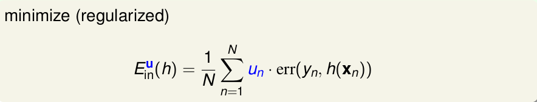
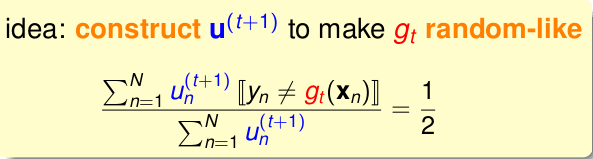
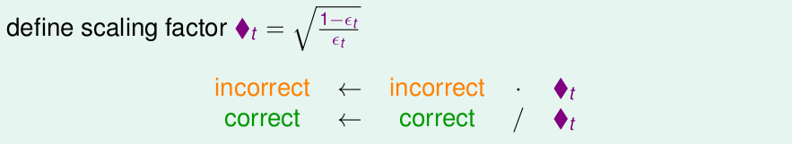
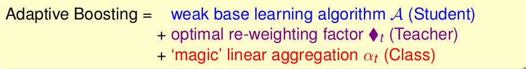

《机器学习技法》系列课程（八）
在上一章，我们学习了Aggregation方法：如果将多个不同的hypotheses组合在一起使用，我们能够获得更好的性能。我们介绍了实现Aggregation的两种方法，Blending和Bagging。对于Blending，我们可以视各个hypothesis是同等重要的（一个一票），也可以使用线性或者非线性的组合方法。对于Bagging，它通过使用bootstrap方法从原始数据中抽取多个相同容量的数据副本，从而学习到很多不同的hypothesis用于Aggregation。下面我们学习一种新的方案：Adaptive Boostring。
Motivation of Boosting
我们从实际生活的一个场景来引出我们所要讲述的内容：幼儿园的小朋友如何学习从很多的水果中正确区分出苹果。
很多小朋友可能会从不同的角度来提出区分的方案，比如形状是圆形的，比如颜色是红色的，比如说过是有柄的等等。可能单单对于其中的几个是不能完成任务的，但是多个组合在一起就能够起到区分的作用。
在这个教导小朋友学习识物的过程中，老师起到的一个很大的作用是除了要指出哪些是对的以外，还要指出小朋友在哪里犯错了，让小朋友的注意力集中到那些值得注意的特征上面。
在这里，每一个小朋友就像我们学习过程中的每一个假设（g），而老师则可以类比于我们所使用的学习算法，重要的是这个学习算法能够指导学习的关注点可以放在关键的部分（如那些分类错误的点）。
Diversity by Re-weighting
我们首先从Bagging讲起，其核心是bootstrap方法：从样本数量为N的数据中又放回地抽取N个数据，所得到的新的数据就会包含一些重复的数据点。我们可以使用更简单的方法来表示这些数据：我们使用ui表示每一个数据点包含的数目，ui可能是0，也可能是大于0小于N的任意数字，可以把ui看作是数据的权重，而bootstrap方法就是用来产生这些u，从而能够学习不同的g用以Bagging。
我们将添加了这些参数un的演算法称为Weighted Base Algorithm，如果某个点很重要，就为其添加较大的un权重，其需要最小化的Ein为：

对于这样的Weighted-base问题，我们在之前的学习中就有所接触，我们在SVM以及逻辑回归中也使用了类似的方法。对于SVM，其添加的un，最终会移动到参数α的上界。在SGD的LR算法中un可以决定抽样的比例。
现在我们回头来看我们的Bagging问题，它如果能够达到很好的效果，其条件之一是每一个g要不同，越不同，效果越好。那么我们该怎样选择u来让g更加多样性呢（另一层意思是怎样优化bootstrap来达到增加g多样性的目的）？
考虑在两轮中使用un(t)和un(t+1)获得的gt和gt+1。如果我们选出的gt在使用权重un(t+1)时效果越差，那么gt和与gt类似的假设就都不会被选择，这也就说明了gt+1和gt差别就会很大。那么我们从全局上考虑，如果让所有的g整体上表现最好，那么让其发生的更随机，就类似丢硬币：概率为1/2：

让在gt下un(t+1)正确的和错误的点一样多！
Adaptive Boosting Algorithm
上一节中，我们讨论了optimal re-weighting，其意义是首先将手上的gt的错误率a计算出来，然后把错误的点做（1-a）比例的放缩，然后把正确的点做a的放缩。现在我们定义一个新的比例因子来代替上面的a：

这样就能把错误放大，正确缩小了，这样就能专注于错误的数据！
现在我们可以基本写出Adaptive Boosting，其使用un来代替bagging算法中的bootstrap，每一轮通过un获得gt（通过最小化01Error），在下一轮更新un时，通过上述的“方片”因子进行处理。然而，还存在两个问题没有处理：
- un怎样初始化？
- 各个g怎样组合到一起？
对于第一个问题，u1 = 1 / N。对于第二个问题，我们肯定不能采用同等权重的方案，因为在这里有的g做得好，但是同样存在g做的很糟糕，他们的比例基本是随机的。提出该算法的作者则在每次update un时都自动计算每个g的比例系数：αt=ln(“方片”)，其意义表示：如果gt越好，那么αt越大，如果犯错的概率为1/2，则其起不到作用αt=0，如果犯错概率为0，则这一个g就能完美完成任务，则αt为无穷大。这就是我们这一节中要了解的Adaptive Boostring（AdaBoost）Algorithm：

该算法的具体过程如下：
对于AdaBoost，我们可以从VC Bound的角度来考虑其复杂度，这里不再具体解释。这里有一个结论：如果其中的g能够比胡乱猜要做得好（错误率小于1/2）就能够保证在T = O（logN）次迭代后让Ein(G)很小，并且Eout可以做到基本小于Ein(G)。
对于AdaBoost，只要g比随机要做得好，那么它就能很健壮！
文章内容和图片均来自“国立台湾大学林轩田老师”的《机器学习技法》课程！
— END —